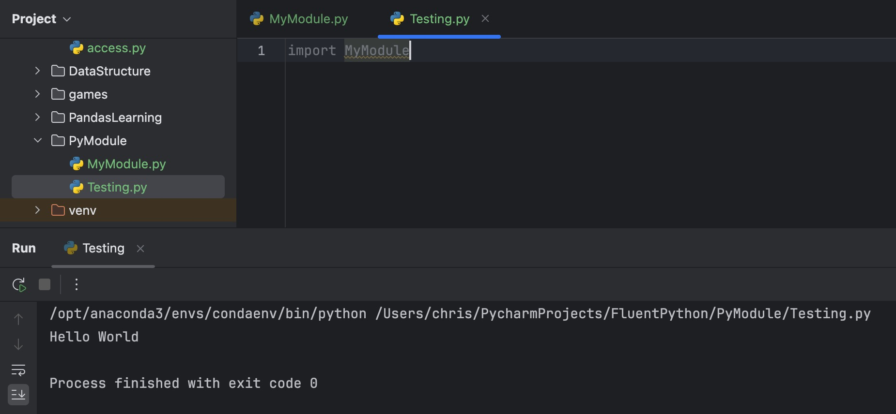

模块
模块(module) 是一个Python文件（扩展名为.py），它包含了函数、类、变量以及可执行的代码。模块的作用是代码复用、结构化管理和减少重复代码。
创建模块
要创建一个模块的过程就是写 Python程序的过程。比如，将下面代码保存成文件名为MyModule.py，那么这个文件就是一个模块:
print("hello, world")
对于上面的模块来讲，它的内容很简单，并且是可以立即执行的一行代码，这意味着，这个模块在被导入时就会执行。
尝试创建另外一个Python文件Testing.py，将这个模块导入：
import MyModule

导入模块
在上一个部分，已经对导入模块有了认识，但是导入模块的方式主要有四种：
import module
import math
print(math.sqrt(16)) # 4.0
from module import item(不推荐)
from math import sqrt
print(sqrt(16))
这种方式在调用时不需要通过.去调用。
from module import *(强烈不推荐)
from math import *
print(sqrt(16))
print(pi)
print(sin(1))
⚠️ 注意：不推荐使用 import *，因为可能会导致名称冲突。
import module as alias（重命名模块）
import math as m
from math import sqrt as s
print(m.sqrt(16))
print(s(16))
如何避免模块导入后，执行不必要的代码。
- 第一种方式就是，在编写可能被导入的模块时，不要写那些可以直接被执行的代码，只写需要被调用的函数、类、变量。
"""
模块名为 MyModule.py
"""
pi = 3.14
def area(r):
return r*r*pi
class Shape:
def __init__(self, type):
self.type = type
def myname(self):
return self.type
"""
模块名为 Testing.py
"""
import MyModule as m
"""
如果这个文件到些结束，那么不会执行任何导入模块之外的代码，如果要执行模块中的代码，要在下面调用
"""
print(m.pi)
print(m.area(10))
s = m.Shape("Circle")
print(s.myname())
- 通过
if __name__ == '__main__':方式将被导入模块内可立即执行的代码限制为只在本模块下执行：
"""
模块名为 MyModule.py
"""
pi = 3.14
def area(r):
return r*r*pi
class Shape:
def __init__(self, type):
self.type = type
def myname(self):
return self.type
if __name__ == '__main__':
print(pi)
print(area(10))
s = Shape("Circle")
print(s.myname())